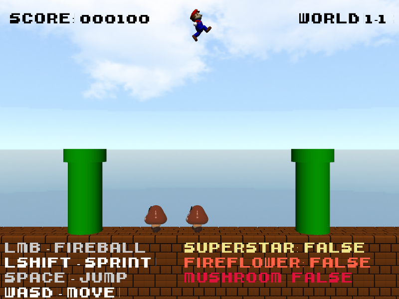

About the game
This was an independent project for one of my modules called Computer Graphics. The task was to create an interactive 3D scene from scratch in OpenGL. I learnt how to generate and render primitive shapes using math concepts to calculate vertex positions and calculate their position from world space to camera space to finally render them onto the screen. I also learnt how to read .obj files to import them into my scene so that i could have more complex models to work with, and I decided on a 2.5 side scrolling Mario Remake for my assignment.